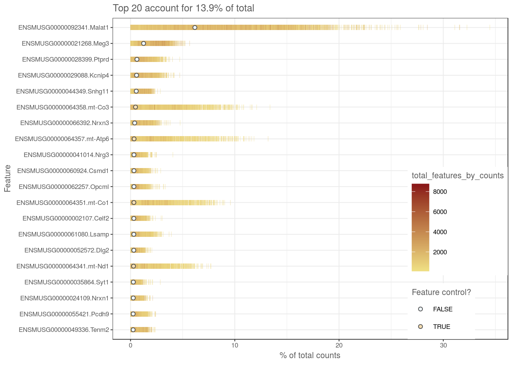
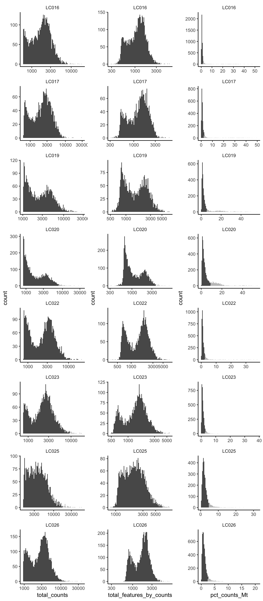

Preprocessing
Pierre-Luc Germain
Institute for Molecular Life Sciences, University of Zurich, SwitzerlandHelena L. Crowell
Institute for Molecular Life Sciences, University of Zurich, SwitzerlandJuly 16, 2019
Last updated: 2019-07-16
Checks: 6 1
Knit directory: MAGL/
This reproducible R Markdown analysis was created with workflowr (version 1.4.0). The Checks tab describes the reproducibility checks that were applied when the results were created. The Past versions tab lists the development history.
Great! Since the R Markdown file has been committed to the Git repository, you know the exact version of the code that produced these results.
The global environment had objects present when the code in the R Markdown file was run. These objects can affect the analysis in your R Markdown file in unknown ways. For reproduciblity it’s best to always run the code in an empty environment. Use wflow_publish or wflow_build to ensure that the code is always run in an empty environment.
The following objects were defined in the global environment when these results were created:
| Name | Class | Size |
|---|---|---|
| data | environment | 56 bytes |
| env | environment | 56 bytes |
The command set.seed(20190311) was run prior to running the code in the R Markdown file. Setting a seed ensures that any results that rely on randomness, e.g. subsampling or permutations, are reproducible.
Great job! Recording the operating system, R version, and package versions is critical for reproducibility.
Nice! There were no cached chunks for this analysis, so you can be confident that you successfully produced the results during this run.
Great job! Using relative paths to the files within your workflowr project makes it easier to run your code on other machines.
Great! You are using Git for version control. Tracking code development and connecting the code version to the results is critical for reproducibility. The version displayed above was the version of the Git repository at the time these results were generated.
Note that you need to be careful to ensure that all relevant files for the analysis have been committed to Git prior to generating the results (you can use wflow_publish or wflow_git_commit). workflowr only checks the R Markdown file, but you know if there are other scripts or data files that it depends on. Below is the status of the Git repository when the results were generated:
Ignored files:
Ignored: .DS_Store
Ignored: ._.Renviron
Ignored: ._.gitignore
Ignored: ._README.md
Ignored: ._Snakefile
Ignored: ._config.yaml
Ignored: .snakemake/
Ignored: MAGL/.DS_Store
Ignored: MAGL/.RData
Ignored: MAGL/.Rhistory
Ignored: MAGL/._.DS_Store
Ignored: MAGL/._.Rprofile
Ignored: MAGL/._.gitignore
Ignored: MAGL/._data
Ignored: MAGL/analysis/._refs.bib
Ignored: MAGL/analysis/1-clustering_cache/
Ignored: MAGL/analysis/3-differential_cache/
Ignored: MAGL/analysis/4-visualization_cache/
Ignored: MAGL/analysis/5-geneset_cache/
Ignored: MAGL/analysis/6-more_cache/
Ignored: MAGL/data/
Ignored: MAGL/output/
Ignored: data/
Ignored: figures/
Ignored: meta/
Ignored: results/
Ignored: scripts/.DS_Store
Ignored: scripts/._.DS_Store
Ignored: scripts/._apply_scdd.R
Ignored: scripts/._plot_perf_by_expr.R
Ignored: scripts/._plot_perf_by_lfc.R
Ignored: scripts/._plot_perf_by_ss.R
Ignored: scripts/._plot_runtimes.R
Ignored: scripts/._plot_sim_ex.R
Ignored: scripts/._prep_data.R
Ignored: scripts/._prep_magl.R
Ignored: scripts/._prep_sim.R
Ignored: scripts/._sim_qc.R
Ignored: scripts/._utils.R
Untracked files:
Untracked: .RData
Untracked: .RDataTmp
Untracked: .Rhistory
Untracked: MAGL/current
Untracked: figs/
Unstaged changes:
Modified: MAGL/.Rprofile
Modified: MAGL/analysis/3-differential.Rmd
Deleted: scripts/fig_vehicle_vs_lps.R
Note that any generated files, e.g. HTML, png, CSS, etc., are not included in this status report because it is ok for generated content to have uncommitted changes.
These are the previous versions of the R Markdown and HTML files. If you’ve configured a remote Git repository (see ?wflow_git_remote), click on the hyperlinks in the table below to view them.
| File | Version | Author | Date | Message |
|---|---|---|---|---|
| Rmd | 244411f | HelenaLC | 2019-07-11 | update lps analysis to include removal of doublets |
| html | 244411f | HelenaLC | 2019-07-11 | update lps analysis to include removal of doublets |
| html | 08bf260 | HelenaLC | 2019-06-17 | update |
| Rmd | 61c0b06 | HelenaLC | 2019-05-20 | update |
| Rmd | faf858d | HelenaLC | 2019-05-17 | add DS & geneset analysis |
| html | 3c5aa5f | HelenaLC | 2019-05-03 | add MAGL prepro,clust,anno |
| Rmd | 10c7525 | HelenaLC | 2019-05-03 | add MAGL prepro,clust,anno |
| html | ba6cb8c | HelenaLC | 2019-04-03 | add scripts |
| Rmd | eaed7ec | HelenaLC | 2019-03-11 | initial commit |
Load packages
library(cowplot)
library(ggplot2)
library(scater)
library(scds)
library(SingleCellExperiment)Load & reformat data
# load raw counts
fastq_dirs <- list.dirs("data", recursive = FALSE, full.names = TRUE)
names(fastq_dirs) <- basename(fastq_dirs)
sce <- DropletUtils::read10xCounts(fastq_dirs)
# rename row/colData colnames & SCE dimnames
names(rowData(sce)) <- c("ENSEMBL", "SYMBOL")
names(colData(sce)) <- c("sample_id", "barcode")
sce$sample_id <- factor(basename(sce$sample_id))
dimnames(sce) <- list(
with(rowData(sce), paste(ENSEMBL, SYMBOL, sep = ".")),
with(colData(sce), paste(barcode, sample_id, sep = ".")))
# load metadata
md_dir <- file.path("data", "metadata.xlsx")
md <- readxl::read_excel(md_dir)
m <- match(sce$sample_id, md$`Sample ID`)
sce$group_id <- md$Characteristics[m]
# remove undetected genes
sce <- sce[Matrix::rowSums(counts(sce) > 0) > 0, ]
dim(sce)[1] 22963 30185Doublet removal
# split SCE by sample
cs_by_s <- split(colnames(sce), sce$sample_id)
sce_by_s <- lapply(cs_by_s, function(cs) sce[, cs])
# run 'scds'
sce_by_s <- lapply(sce_by_s, function(u)
cxds_bcds_hybrid(bcds(cxds(u))))
# remove doublets
sce_by_s <- lapply(sce_by_s, function(u) {
# compute expected nb. of doublets (10x)
n_dbl <- ceiling(0.01 * ncol(u)^2 / 1e3)
# remove 'n_dbl' cells w/ highest doublet score
o <- order(u$hybrid_score, decreasing = TRUE)
u[, -o[seq_len(n_dbl)]]
})
# merge back into single SCE
sce <- do.call(cbind, sce_by_s)Calculate QC Metrics
(mito <- grep("mt-", rownames(sce), value = TRUE)) [1] "ENSMUSG00000064341.mt-Nd1" "ENSMUSG00000064345.mt-Nd2"
[3] "ENSMUSG00000064351.mt-Co1" "ENSMUSG00000064354.mt-Co2"
[5] "ENSMUSG00000064356.mt-Atp8" "ENSMUSG00000064357.mt-Atp6"
[7] "ENSMUSG00000064358.mt-Co3" "ENSMUSG00000064360.mt-Nd3"
[9] "ENSMUSG00000065947.mt-Nd4l" "ENSMUSG00000064363.mt-Nd4"
[11] "ENSMUSG00000064367.mt-Nd5" "ENSMUSG00000064368.mt-Nd6"
[13] "ENSMUSG00000064370.mt-Cytb"sce <- calculateQCMetrics(sce, feature_controls = list(Mt = mito))
plotHighestExprs(sce, n = 20)
| Version | Author | Date |
|---|---|---|
| 244411f | HelenaLC | 2019-07-11 |
Filtering
# get sample-specific outliers
cols <- c("total_counts", "total_features_by_counts", "pct_counts_Mt")
log <- c(TRUE, TRUE, FALSE)
type <- c("both", "both", "higher")
drop_cols <- paste0(cols, "_drop")
for (i in seq_along(cols))
colData(sce)[[drop_cols[i]]] <- isOutlier(sce[[cols[i]]],
nmads = 2.5, type = type[i], log = log[i], batch = sce$sample_id)
sapply(drop_cols, function(i)
sapply(drop_cols, function(j)
sum(sce[[i]] & sce[[j]]))) total_counts_drop
total_counts_drop 101
total_features_by_counts_drop 50
pct_counts_Mt_drop 20
total_features_by_counts_drop
total_counts_drop 50
total_features_by_counts_drop 68
pct_counts_Mt_drop 23
pct_counts_Mt_drop
total_counts_drop 20
total_features_by_counts_drop 23
pct_counts_Mt_drop 3341cd <- data.frame(colData(sce))
ps <- lapply(seq_along(cols), function (i) {
p <- ggplot(cd, aes_string(x = cols[i], alpha = drop_cols[i])) +
geom_histogram(bins = 100, show.legend = FALSE) +
scale_alpha_manual(values = c("FALSE" = 1, "TRUE" = 0.4)) +
facet_wrap(~sample_id, ncol = 1, scales = "free") +
theme_classic() + theme(strip.background = element_blank())
if (log[i])
p <- p + scale_x_log10()
return(p)
})
plot_grid(plotlist = ps, ncol = 3)
layout(matrix(1:2, nrow = 1))
ol <- Matrix::rowSums(as.matrix(colData(sce)[drop_cols])) != 0
x <- sce$total_counts
y <- sce$total_features_by_counts
LSD::heatscatter(x, y, log="xy", main = "unfiltered",
xlab = "Total counts", ylab = "Non-zero features")
LSD::heatscatter(x[!ol], y[!ol], log="xy", main = "filtered",
xlab = "Total counts", ylab = "Non-zero features")
# summary of cells kept
ns <- table(sce$sample_id)
ns_fil <- table(sce$sample_id[!ol])
print(rbind(
unfiltered = ns, filtered = ns_fil,
"%" = ns_fil / ns * 100), digits = 0) LC016 LC017 LC019 LC020 LC022 LC023 LC025 LC026
unfiltered 4345 2361 2860 4233 3639 3404 3234 4908
filtered 3899 2074 2342 3375 3273 3158 2926 4510
% 90 88 82 80 90 93 90 92# drop outlier cells
sce <- sce[, !ol]
dim(sce)[1] 22963 25557# require count > 1 in at least 20 cells
sce <- sce[Matrix::rowSums(counts(sce) > 1) >= 20, ]
dim(sce)[1] 11063 25557Save SCE to .rds
saveRDS(sce, file.path("output", "MAGL-SCE.rds"))
sessionInfo()R version 3.6.0 (2019-04-26)
Platform: x86_64-pc-linux-gnu (64-bit)
Running under: Ubuntu 16.04.5 LTS
Matrix products: default
BLAS: /usr/local/R/R-3.6.0/lib/libRblas.so
LAPACK: /usr/local/R/R-3.6.0/lib/libRlapack.so
locale:
[1] LC_CTYPE=en_CA.UTF-8 LC_NUMERIC=C
[3] LC_TIME=en_CA.UTF-8 LC_COLLATE=en_CA.UTF-8
[5] LC_MONETARY=en_CA.UTF-8 LC_MESSAGES=en_CA.UTF-8
[7] LC_PAPER=en_CA.UTF-8 LC_NAME=C
[9] LC_ADDRESS=C LC_TELEPHONE=C
[11] LC_MEASUREMENT=en_CA.UTF-8 LC_IDENTIFICATION=C
attached base packages:
[1] parallel stats4 stats graphics grDevices utils datasets
[8] methods base
other attached packages:
[1] scds_1.0.0 scater_1.12.2
[3] SingleCellExperiment_1.6.0 SummarizedExperiment_1.14.0
[5] DelayedArray_0.10.0 BiocParallel_1.18.0
[7] matrixStats_0.54.0 Biobase_2.44.0
[9] GenomicRanges_1.36.0 GenomeInfoDb_1.20.0
[11] IRanges_2.18.1 S4Vectors_0.22.0
[13] BiocGenerics_0.30.0 cowplot_0.9.4
[15] ggplot2_3.2.0
loaded via a namespace (and not attached):
[1] viridis_0.5.1 edgeR_3.26.5
[3] BiocSingular_1.0.0 viridisLite_0.3.0
[5] R.utils_2.9.0 DelayedMatrixStats_1.6.0
[7] assertthat_0.2.1 highr_0.8
[9] dqrng_0.2.1 cellranger_1.1.0
[11] GenomeInfoDbData_1.2.1 vipor_0.4.5
[13] yaml_2.2.0 pillar_1.4.2
[15] backports_1.1.4 lattice_0.20-38
[17] limma_3.40.2 glue_1.3.1
[19] digest_0.6.20 XVector_0.24.0
[21] colorspace_1.4-1 R.oo_1.22.0
[23] htmltools_0.3.6 Matrix_1.2-17
[25] pkgconfig_2.0.2 zlibbioc_1.30.0
[27] purrr_0.3.2 scales_1.0.0
[29] HDF5Array_1.12.1 whisker_0.3-2
[31] LSD_4.0-0 git2r_0.26.1
[33] tibble_2.1.3 xgboost_0.82.1
[35] withr_2.1.2 lazyeval_0.2.2
[37] readxl_1.3.1 magrittr_1.5
[39] crayon_1.3.4 evaluate_0.14
[41] R.methodsS3_1.7.1 fs_1.3.1
[43] beeswarm_0.2.3 tools_3.6.0
[45] data.table_1.12.2 stringr_1.4.0
[47] Rhdf5lib_1.6.0 DropletUtils_1.4.2
[49] locfit_1.5-9.1 munsell_0.5.0
[51] irlba_2.3.3 compiler_3.6.0
[53] rsvd_1.0.1 rlang_0.4.0
[55] rhdf5_2.28.0 grid_3.6.0
[57] RCurl_1.95-4.12 BiocNeighbors_1.2.0
[59] labeling_0.3 bitops_1.0-6
[61] rmarkdown_1.13 gtable_0.3.0
[63] codetools_0.2-16 R6_2.4.0
[65] gridExtra_2.3 knitr_1.23
[67] dplyr_0.8.3 workflowr_1.4.0
[69] rprojroot_1.3-2 stringi_1.4.3
[71] ggbeeswarm_0.6.0 Rcpp_1.0.1
[73] tidyselect_0.2.5 xfun_0.8